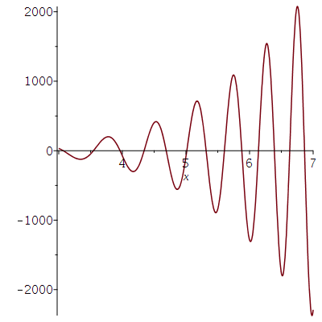
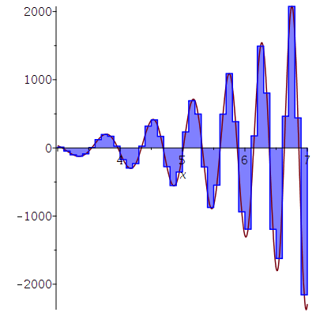

To demonstrate some of the programming techniques in Maple, we will look at the definition of the Reimann integral from a basic calculus point of view.. So, do not expect a lot of rigour.
We want to use Riemann sums to compute the integral of $f(x)= x^4\sin(x^2)$ for $3 \leq x \leq 7$.
> f:=x->x^4 * sin(x^2);\[ f \mapsto x^4 \sin(x^2) \]
Suppose that we use $N$ subintervals and that the
height
of each rectangle is determined by the value
of $f$ at the midpoint of the subinterval. Those midpoints are given
by
> x:= (i,N) -> 3+(2*i-1)*(4/(2*N));\[ x:= (i,N) \mapsto 3 + \frac{2 (2 i - 1)}{N} \]
for $i = 1, 2, \ldots, N$. The length of the subintervals, $\Delta x$, is $4/N$.
The Riemann sum is
> S := N -> sum( (f@x)(i,N), i=1..N)*(4/N);\[ S := \frac{4 \left( \sum_{i=1}^N (f@x)(i,N)\right)}{N} \]
The values of the Riemann sums for $N=10, 20, 30$ and $40$ are
> evalf(S(10)); evalf(S(20)); evalf(S(30)); evalf(S(40));\[ \begin{split} &176.3042341 \\ & -86.7922777 \\ &-76.85654501 \\ &-73.61449115 \end{split} \]
Using int( ), we find that
> evalf(int(f(x),x=3..7));\[ -69.66059111 \]
We note that the convergence of the Riemann sums toward the exact answer is slow.
It is possible to write a simple code that compute Riemann sums for any intervals of integration and any number of subintervals.
> RS:= proc(a,b,N) local i,Delta,R,x,terms: x:=i->a+(2*i-1)*((b-a)/(2*N)): Delta := (b-a)/N: R := sum( (f@x)(i)*Delta, i=1..N): RETURN(evalf(R)); end proc;\[ \begin{split} & RS := proc (a, b, N)\\ &\qquad local\ i, Delta, R, x: \\ & \qquad x := i \mapsto a+(i-1/2)*(b-a)/N \\ & \qquad Delta := (b-a)/N: \\ & \qquad R := sum((f@x(i))*Delta, i = 1 .. N); \\ & \qquad RETURN(evalf(R)) \\ & end\ proc \end{split} \]
As expected
> RS(3,7,40);\[ -73.61449124 \]
The graph of $f(x)$ for $x \leq x \leq 7$ is given below.
> plot1 := plot(f(x),x=3..7);

The following procedure will plot the area covered by the Riemann sums.
> staircase:=proc(a,b,N) local i, x, xl, xr, yg, xg, PLOT; x:=i->a+(2*i-1)*((b-a)/(2*N)); xl:=i->a+(i-1)*(b-a)/N; xr:=i->a+i*(b-a)/N; for i from 1 to N do; xg[2*i-1]:=xl(i); xg[2*i]:=xr(i); yg[2*i-1]:=(f@x)(i); yg[2*i]:=yg[2*i-1]; od; PLOT:=plot([[xg[1],0], seq([xg[n],yg[n]],n=1..2*N) ,[xg[2*N],0]], color=blue, filled = [color = "Blue", transparency = .5]): RETURN(PLOT); end proc;\[ \begin{split} & staircase := proc (a, b, N) \\ & \qquad local\ i, x, xl, xr, yg, xg, PLOT;\\ & \qquad x := (i) \mapsto a+(i-1/2)*(b-a)/N; \\ & \qquad xl := (i) \mapsto a+(i-1)*(b-a)/N; \\ & \qquad xr := (i) \mapsto a+i*(b-a)/N; \\ & \qquad for\ i\ to\ N\ do \\ & \qquad \qquad xg[2*i-1] := xl(i); xg[2*i] := xr(i); yg[2*i-1] := f@x(i); yg[2*i] := yg[2*i-1]; \\ & \qquad end\ do;\\ & \qquad PLOT := plot([[xg[1], 0], seq([xg[n], yg[n]], n = 1 .. 2*N), [xg[2*N], 0]], color = blue, \\ & \qquad \qquad filled = [color = "Blue", transparency = .5]);\\ & \qquad RETURN(PLOT) \\ & end\ proc \end{split} \]
We can draw the the area covered by the Riemann sums for $N=40$ and compare with the area delimited by the graph of $f$.
> plot2:=staircase(3,7,40):
> plots[display]({plot1,plot2});

Maybe one day.